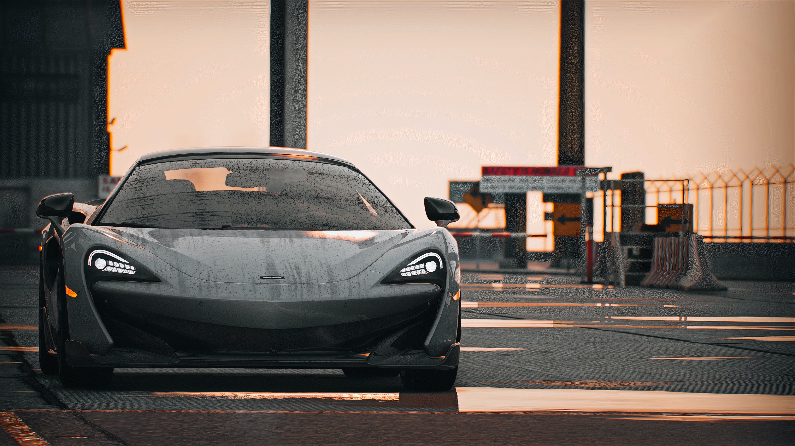

при вазі 1283 кг він розганяєтся з місця до 100 км/год за 2,9 с, до 200 — за 7,8 с
і досягає максимальної швидкості 341 км/год, має 720 кінських сил.Продажі
720s почались в травні 2017 року,коштує вона більше як 300 тисяч доларів.
.jpg)
.jpg)
Майже кожен з нас любить машини.Хтось,глянувши одним оком зможе сказати,
що це за марка, та назвати її модель,а у когось навпаки — любить машини,бо просто подобаються,
і не обов'язково з точністю знати їхні назви.У світі безліч різних автомобілів, і знати про всі просто не можливо,
але зараз я вам розповім про топ п'ять кращих на мою думку, які точно заслуговують нашої уваги.
Можливо, сьогодні ви дізнаєтесь для себе щось нове.
BMW M5 F90
McLaren 720s
Mercedes - Benz G63
Lamborghini Aventador
Audi R8

Відкриє наш топ, машина яка знаходиться на першому місці в списку — седан BMW M5 F90.
Це спортивна машина, яка виробляється дочірньою компанією BMW M.Від 0 до 100 км/год
вона розганяється за 3,3 секунди,а під капотом цілих 600 кінських сил.
Ціна такої машини приблизно 120 тисяч доларів.
Існують такі покоління M5: BMW M5 (E28); BMW M5 (E34); BMW M5 (E39), та інші.
По суті головними конкурентами M5 є такі моделі , а саме:
Mercedes E63 AMG, Audi RS 6, та Cadillac CT5-V BlackWing.
Максимальна швидкість машини 250км/год.
Можна також переглянути відео M5
Після M5 ми розглянемо McLaren 720s — це британсткий спорткар, V8 4,0 літровий,
при вазі 1283 кг він розганяєтся з місця до 100 км/год за 2,9 с, до 200 — за 7,8 с
і досягає максимальної швидкості 341 км/год, має 720 кінських сил.Продажі
720s почались в травні 2017 року,коштує вона більше як 300 тисяч доларів.
Дизайнер машини 720s — Роберт Мелвілл.Якщо ви хочете "по крутому"
приїжджати на якісь вечірки — то ця машина 100% вам підходить!
Конкуренцію складає: Lamborghini Aventador, Ferrari F8 Tributo,Maserati MC20.
Погляньте,який 720s на дорозі!
Mercedes - Benz G63 AMG — позашляховик,що виробляється компанією
Mercedes - Benz,незважаючи на досить велику масу,і габарити автомобіля,
розгін до сотні займає 5,4 секунди.Має приблизно 700 кінських сил(мотор 5,5л).
В Україні таку машину 2020 року можна купити за 230 - 245 тисяч доларів.
Конкуренція : Land Rover Defender, Jeep Wrangler, Ford Bronco.
Вприниципі "підкинути" дітей в школу підійде,рекомендую.
Його максимальна швидкість обмежена електронікою на
позначці 220 км/год.
Давайте разом повидимося це відео
Передостання машина Lamborghini Aventador LP700-4 — повнопривідний суперкар
італійської спортивної преміум-марки Lamborghini.Представлений на Женевському
автосалоні в березні 2011 року. Є заміною Lamborghini Murciélago.
Розгін від 0 до 100 км/год відбувається за 2.9 секунди,максимальна
швидкість — 350 км/год,мотор об'ємом 6,5 л і потужністю 700
кінських сил.Ціна Aventador може перевищувати 300 тисяч доларів.
Конкуренція : McLaren 720S, Ferrari F8 Tributo,Pagani Huayra.
Lamborghini Aventador LP700-4
П’ята, і водночас остання машина в нашому списку Audi R8 — середньомоторний
повнопривідний cпортивний автомобіль класу суперкар, вироблений німецьким автовиробником Audi,
вперше представлений в 2006 році на Паризькому автосалоні (Paris Motor Show).Її конкурентами є :
Acura NSX, Porsche 911, Lamborghini Huracan, Mercedes-AMG GT.
У базовій комплектації Audi R8 оснащується двигуном V8 об'ємом 4.2 літра,
який використовує фірмову технологію FSI, і виробляє максимальну потужність рівну 420 к. с.
Це дозволяє автомобілю розганятися з 0 до 100 км/год за 4.6 секунди. Максимальна швидкість
суперкара в цілях безпеки обмежена електронікою на позначці 301 км/год.Ціна такого "задоволення"
більше як 200 тисяч доларів.
Розглянемо R8 білого кольору на відео
Ось ми підійшли до завершення нашої статті,
якщо ви все прочитали від початку до кінця ,
то я вас вітаю — тепер ви знаєте на 5 машин більше.
З приводу співпраці перегляньте інформацію нижче
вдячний вам за приділений вами час,на все добре!

БУДЬТЕ ОБЕРЕЖНІ НА ДОРОЗІ!
Сайт "top_fivecars" розробив учень 11 класу Цап Андрій.
Також брав участь у редакції тексту Михайло Голич, який
дав більше інформації про машини.Сайт написаний у текстовому
редакторі "Visual Studio Code".Також можете переглянути
ще один проект Андрія — сайт wanderlust